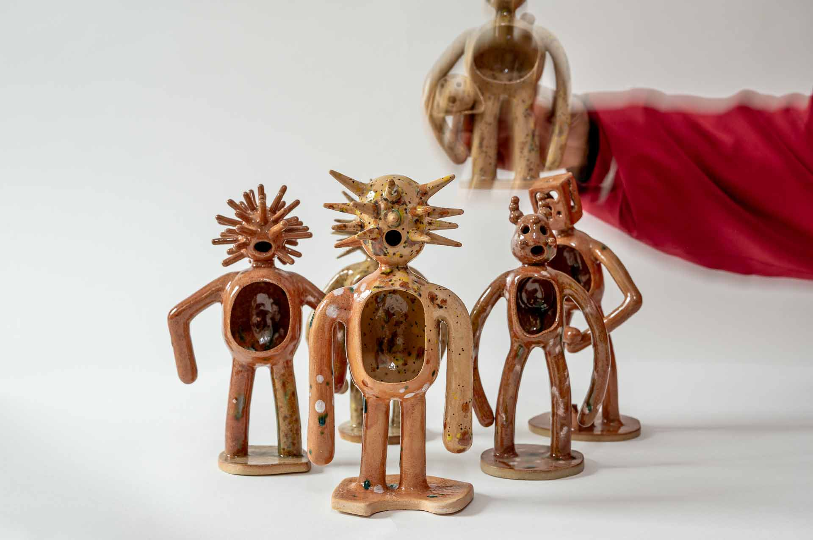

Ceramics · Drawing · Design
Artist
Cerafina’s work is emotional - rooted in life, freedom, and the need to make. She moves through drawing, textiles, and print with clay and ceramics being core. Working with it brings peace and opens new ways of thinking. Process matters as much as outcome: each gesture unpacks feelings, sparks energy, and births ideas. Which can be felt and seen in her creations. Her practice is a way to speak on her own terms. Cerafina was part of Hart Club’s Hart School - https://hartclub.org/